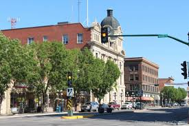

REGINA: The Capital city of Saskatchewan with a population of about 253,000 people,
and is home to the Hill Centre Towers or Regina Twin Towers
SASKATOON: The largest city in Saskatchewan with a population of about 347,000 people,
and is split by the Saskatchewan River
PRINCE ALBERT: With a National Park home to roughly 1500 lakes, and the city having about
37,000 people
MOOSE JAW: Home to "Mac the Moose", and a population of 34,000 people

WARMAN: A small city, housing about 22,000 people, most of which visiting the Sutherland
Automotive Speedway